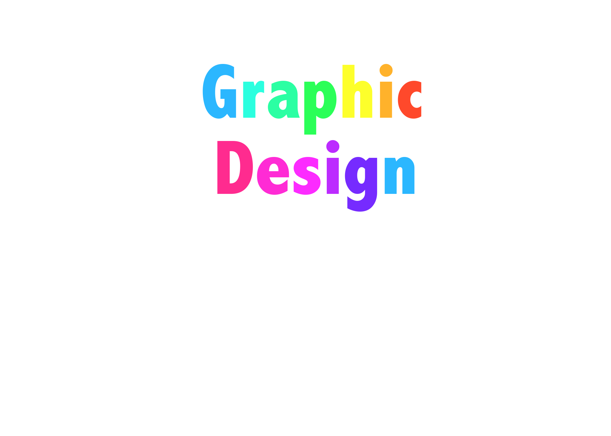

In todays ever changing economy and job market the fine arts of digital and graphic design are of the utmost important today. "To put it very simply: computer science (CS) is the future of the job market. By 2024, there will be a projected 4.4 million jobs in computer and information technology occupations. That’s a 12 percent growth rate from 2014, a rate outpacing that of all other occupations. Computer-oriented jobs are also the number one source of all new wages in the US and are demanded four times more than any other occupation according to Cameron Wilson, COO and VP of Government Relations for Code.org." by New America Weekly.
Wills, Breck. "The United States of Coding". August 25, 2016. Web. New America Weekly. December 14, 2017
In Adobe Photoshop you can make a simple text image with no background like so
Or manipulate and create a small collage of what you love
The fine arts of elemental and graphical design are diffuclt to learn but the pay off is very well. The average Graphic Design worker earns around 40k per year when they start out, while most jobs dont pay as highly. The annual salary for a lower class is considerd anywhere under $35,000 while midle class is above that to near $105,000. Now earning 40k a year is pretty decent since it can be used to start building your own life or can be invested in something else.
There are many fields in this work place, from programers to advertisement creators to even layout artists and web designers.Now all fields and their cirtiques vary from skill level and background knowledge.